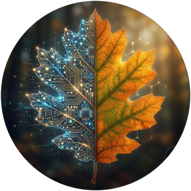

I build AI systems that learn from data without taking it away from the people it belongs to.

I am an AI and data scientist who builds complete systems, from data pipelines to trained models to live products. I shipped a production mobile app on my own, built ML pipelines on real client data, and now research privacy and governance in federated learning as a PhD student at the University of Glasgow.
From privacy preserving research to streaming pipelines and a live mobile app.
FedClinical is a federated learning framework I built from scratch for mental health text classification. Five clients hold deliberately uneven data. Slide through the privacy levels to see what each step costs.
ε is the privacy budget. Smaller ε means stronger privacy.
An illustration of the effect, not the real data.
I am always happy to talk about federated learning, privacy in AI and AI for finance.